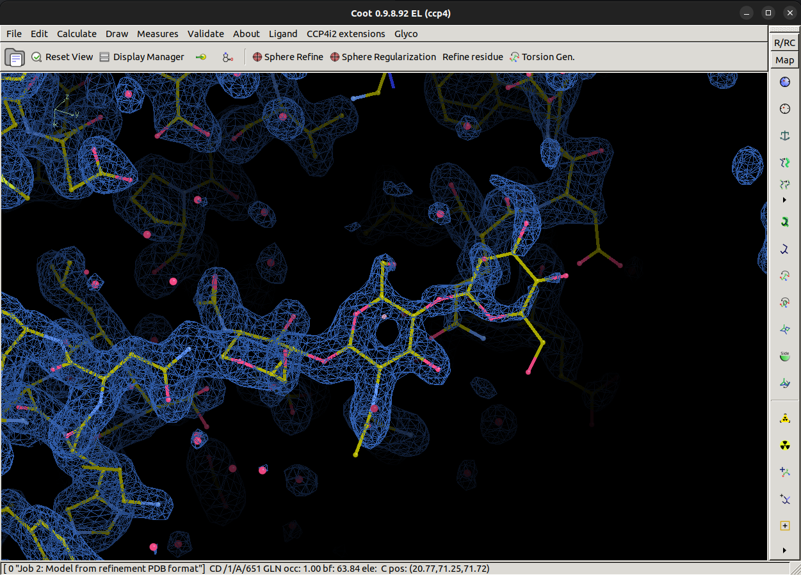
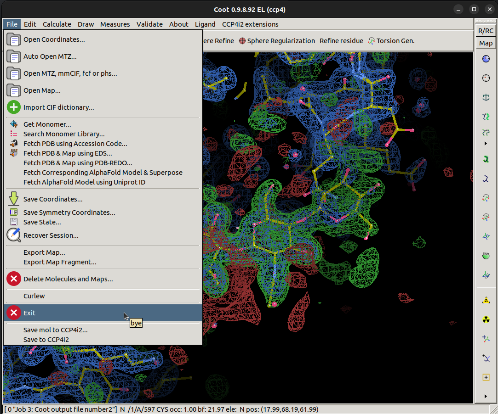

Carbohydrate Workshop
Part 1 - Modelling Carbohydrates using CCP4i2
Contents
1. Introduction
Coot is a program for macromolecular model building, model completion and validation1. We will be using Coot alongside CCP4i22 to build and refine a carbohydrate chain on a human glutamate carboxypeptidase II protein3 (PDB Code: 6FE5). This structure was solved up to 1.52 Å resolution with approximately 700 residues.
This page outlines what you should do to generate a glycan with some assumed knowledge. If you aren't sure how to proceed for any given step, you can take a look at a hint or the extra instructions in the 'How do I do that?' sections.
2. Getting Started
To get started, download the following files by clicking on them:
- carbohydrate-workshop-data.mtz - reflection data in MTZ format
- carbohydrate-workshop-data.pdb - coordinates in PDB format
How were these files generated?
These files were generated by refining the deglycosylated deposited model against the observed reflections with 10 cycles of REFMAC5 on CCP4 Cloud.
Next, open CCP4i2 and create a new project.
To create a new project in CCP4i2, navigate to:
which should bring up a box as shown, give the project a suitable name and click How do I do that?
File/Projects > New ProjectCreate
project
Now, import the MTZ file for this workshop into CCP4i2.
The MTZ file contains merged reflections, is there a task that refers to this?
To import an MTZ file into CCP4i2, :
Clicking on the Import merged reflection data task should bring up the task options Now the folder icon in the red highlighted area can be selected to bring up a file browser
where
you can select the You can now press the Hint
How do I do that?
Task menu > Import merged data, AU contents, alignments or coordinates
carbohydrate-workshop-data.mtz file. You may be prompted
to select columns from the MTZ file, you can click Apply. This pop up is
asking
what each column that is found in the MTZ file means, in this case, we know that the F
(Structure Factor Amplitudes) and associated error SIGF are from observed data.
Run button to begin importing the data
We need to generate a best map and difference map for this supplied model to the observed reflections. To do this
we can run the refinement program REFMAC54. In the task labelled 'Refinement
Refmacat/Refmac5',
select the reflections and FreeR set that were just imported and import the atomic model downloaded earlier
(
To runREFMACwith our imported reflections and the downloaded atomic model, we can navigate to the REFMAC
task :
The two red areas tell us we need to select reflections as well as an atomic model, clicking
on
dropdown for reflections we can select our imported reflections, which will leave just the atomic model to
import. Now the folder icon in the red highlighted area can be selected to bring up a file browser
where
you can select the If it is not already selected, you may need to select the imported FreeR set which is below
the
reflection drop down box. After you have an atomic model, reflection set, and FreeR set, you can now press
the
carbohydrate-workshop-data.pdb). RunREFMACwith default settings to generate
a refined model and recalculated maps.
How do I do that?
Task menu > Refinement Refmacat/Refmac5carbohydrate-workshop-data.pdb file.
Run button to begin running the refinement. Once it is finished, you should
see a refinement report.
3. Model Building
Now that we have imported our data and generated some maps, we can start to interactively build the model of a glycan. To do this we need to launch Coot from within CCP4i2.
Hint
Is there something from theREFMACreport that can help us do this?
Once Coot opens, it should look similar to this with an atomic model, best map (2mFo-DFc) and difference map (mFo-DFc) loaded.
What does 2mFo-DFc mean?
The 2mFo-DFc map is one of the common maps used in crystallography and is not simply a map calculated from observed reflection structure factor amplitudes and calculated phases, the addition of weightings from the figure of merit (the uncertainty of a given phase) and σa weighting factor often allows for a more interpretable map.
- Fo - Observed Reflections
- Fc - Calculated Reflections
- m - Figure of Merit
- D - σa weight factor

Look around the model, is there anything that stands out as odd?
What's odd?
There is quite a lot of positive difference density for this model, which indicates we may be missing part of the model. We're going to try and fix that.
This model contains a missing carbohydrate chain, can you spot where it is?
How do I find where it is?
You can find out where the missing glycan is by looking around the model for an area for a large positive difference density, but this may be time-consuming for a big model!
We can ask Coot to look for us using by navigating to
Validate > Unmodelled blobs...

Once we click Unmodelled blobs..., a popup will appear asking us to pick a map and model to with.
In this case, we want to search for blobs in the difference map which show when we contour that map to 4 r.m.s.d.
Changing from the default of 1.4 r.m.s.d helps us find stronger blobs. You see what this will look for if you
contour the difference map to 4 sigma. Now click the Find Blobs button to search.
Coot will then return a list of found blobs, and in our case, there is only one large blob it has found, so we can click on that to take us to the area where we have an unmodelled glycan. In a real case, you may not know what should go into a big blob of difference density, it could be missing protein, a missing ligand or a missing glycan!
If we center our view on the blob of green density closest to the protein chain, as shown, we are ready to start building a model of the missing carbohydrate chain!
Coot has a carbohydrate module we will need to load to be able to do this, navigate to and select
Calculate > Modules > Carbohydrate, which will add the
Glyco button in the top bar.
Now we can let the semi-automatic glycan builder in Coot handle the heavy lifting. Center your view
near to the ASN/476 residue of chain A. Then, navigate to and select
Glyco > N-link add NAG, NAG, BMA . Coot will then attempt to add the
first three sugars in an N-glycan chain which are NAG followed with another NAG via a 1,4 linkage, followed by a
BMA sugar via another 1,4 linkage.
Coot should have built three sugars nicely into the best (2mFo-DFc) density map as shown. The terminal BMA residue looks to have little density to support it at the moment, however, we must remember that the map was calculated in the absence of this carbohydrate chain, so before we make judgements on whether Coot has added the carbohydrates correctly, we must re-refine the structure using REFMAC.
Save the mol back to CCP4i2 and exit Coot, now rerun REFMAC with the new model to calculate a new map
How do I do that?
Navigate to the save button,
File > Save mol to CCP4i2 > Ok
Then navigate to the exit button,
File > Exit.

Now, select another REFMAC task and press the Run button
After 10 cycles of REFMAC we can reopen our model and map in Coot (navigating back to A/ASN/476) to see that the semi-automatic glycan builder has done a good job, but at this point are we finished?
Are we finished?
Near to the terminal BMA sugar, we see some suspiciously ring shaped positive difference density. Using theGlyco module, see if you can come up with what should go there. Remember that
Coot looks at the center of the view to know where to put new residues, and once they are positioned, we
should refine using REFMAC. Try your best at modelling more sugars on this carbohydrate chain, we can check
how well you have done in Part 2 of this workshop!
Part 2 - Validating Carbohydrates
References
- Emsley, P., Lohkamp, B., Scott, W. G. & Cowtan, K. (2010). Features and development of Coot. Acta Cryst. D66, 486-501.
- Potterton L, Agirre J, Ballard C, et al. CCP4i2: the new graphical user interface to the CCP4 program suite. Acta Cryst. D74, 68-84.
- Barinka C, Novakova Z, Hin N, et al. Structural and computational basis for potent inhibition of glutamate carboxypeptidase II by carbamate-based inhibitors. Bioorg. Med. Chem, Volume 27, Issue 2, 255-264
- Murshudov, G. N., Skubak, P., et al. REFMAC5 for the refinement of macromolecular crystal structures. Acta Cryst. D67, 355-367.
Special thanks to Paul Bond for testing this workshop and for the inspiration. Checkout Paul's Coot workshop here if you want to learn more about Coot.
Jordan Dialpuri and Lucy Schofield, University of York